Three variants of one control on the four-column board, built on the Mission control prototype with the busy scenario's data, shot in both themes at 1440 and on the phone at 390. The variants drop the accent filter and the ticker, as C11 and C12 took them from the console. Open a variant to use it: ?q=612 selects a find on load, ?queued=oldest,blocked&done=failed a column's order and filter. The prompts, the critic's answers and the scripts that made the variants, the shots and the check sit beside this page.
Per column. Needs you is oldest first and needs no control. Queued runs in the scheduler's order, which is the one order that matters there. What a member looks for in it is a blocked card or one plan's cards. In progress holds three to eight cards, bounded by the slots, and its exceptional cards already speak on the face in amber or with the dashed ring. It needs no filter. Done is newest first. Its one filter is failed only. The two needs no column order covers are finding one card by its ref or a word of its title, and seeing one plan's cards across the columns. In this study's judgment no sort order earns a control: each column has one right order, and oldest first or by spend answer no recurring question. Variant C shows the orders anyway, so the pick is made on the screen and not on this paragraph.
One control or one per column. Variant A is one find box. Variant B is a row of chips. Variant C is a menu per column. Weighed below.
Where the state lives. In every variant the state lives in the URL query beside the project and the view: ?q= for the find and the chips, one parameter per column for the menus. The board's data-query carries it, so the poll, the card fragments and the event stream follow it and a reload keeps it. The pulse strip counts the project, and the status panel's lists are the project's too. The control is the member's lens on the board, not on the status, so only the column counts follow it, as "2 of 5". A Needs you column with hidden items keeps its amber and its "1 of 2" pill, so a decision never goes silent. A board swap waits while the find box has the focus, as the busy guard already does for a form being filled in.
The phone and the keyboard. On the phone the find box takes the full width under "Board" at 44 px, the chips wrap at 44 px, the menu buttons are 44 px squares in the section heads with the state line under the head. The find adds f (focus the box) and Escape (clear, then leave) to the keys list, with the tokens named there. The chips and the menus add no key. They are buttons and radios in the Tab order.
The chat agent. Nothing. The agent reads the whole project through its board tool. The control is the member's lens on the screen, and the agent's board text ignores it.
What it does: one text box right of "Board". A word matches what the face says: the ref, the title, the state and stage words, the activity line, the chips. A key:value term matches a fact behind the face: plan:558, stage:verifying, is:failed (also blocked, stale, provider, near), by:sebastian, model:coding-cheap, pr:612. Every term must match. The columns narrow as you type. In the console the box submits a GET with ?q= on Enter, or on a pause in typing through htmx. Each count reads "2 of 5" in cyan, an empty column says "none match", the × clears. What it costs in clutter: one 232 px box in a row that had the room, with a placeholder that names three tokens. What it cannot do: show what there is to filter, so a member must know or guess the tokens, which the keys list names. It cannot change a column's order.
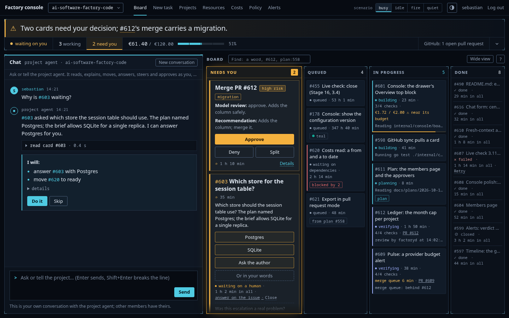
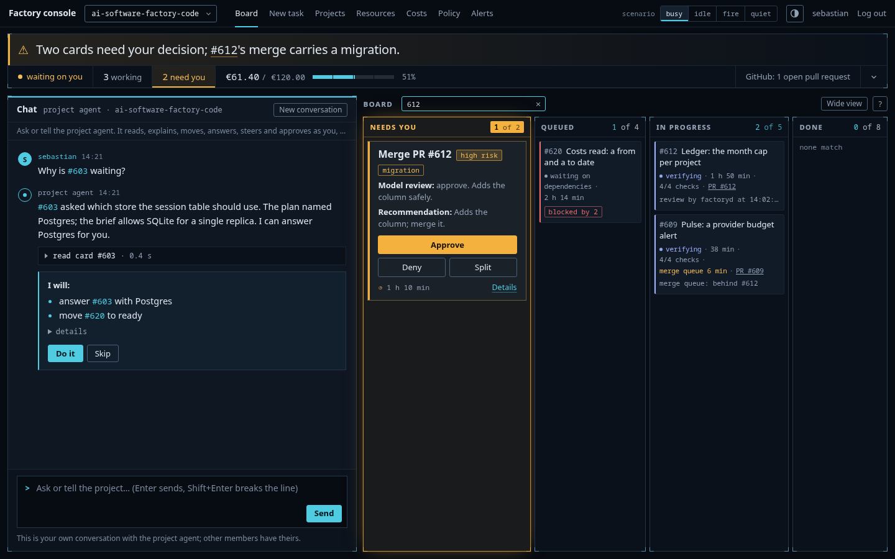
open the variant with the find on · shots: light, 612 fire, provider phone, 612 the keys list
What it does: one chip per exceptional state present on the board (failed, blocked, stale, on the provider, near budget) with its count, and one per plan with cards on the board. One click presses a chip and narrows every column to it. A second click clears. The chips are the find's tokens made visible, and the URL carries the same ?q=is:failed. The row is absent when nothing is exceptional and no plan has cards, as in the quiet moment. What it costs in clutter: in busy, five chips in red and amber under the head on every look at the board, and they repeat what the faces already say in amber. In fire, four. The row competes with Needs you for the eye. What it cannot do: find a card by its ref or a word, show one author's cards, change an order.
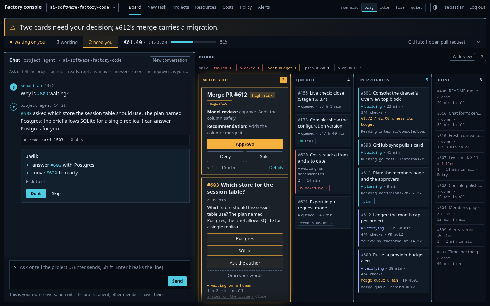
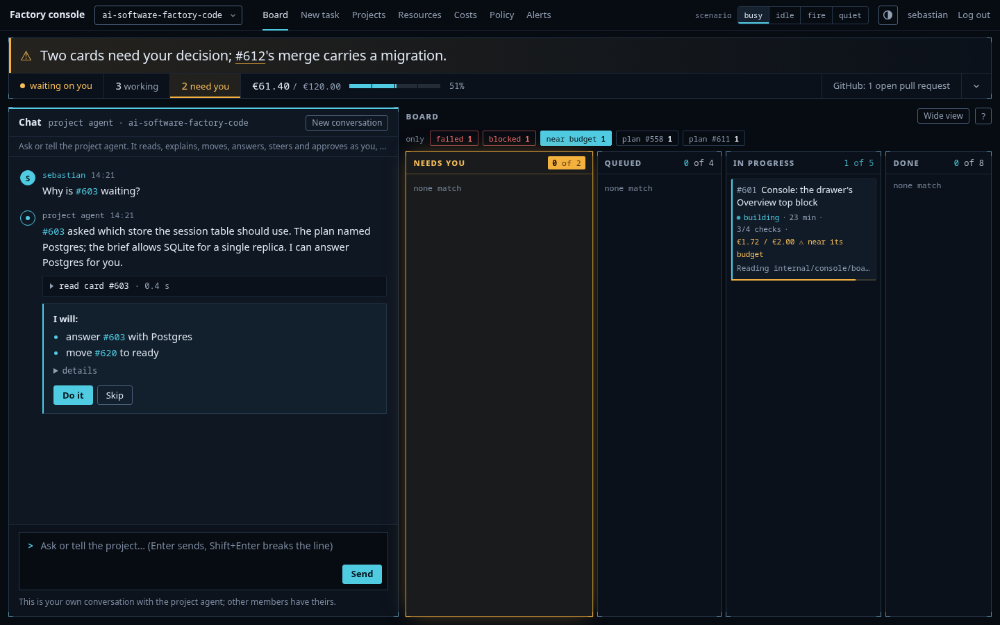
open the variant in fire · shots: light, near budget fire, on the provider phone, near budget
What it does: a ▾ in the head of Queued, In progress and Done, none on Needs you, opens that column's orders and filters as two radio groups. Queued: next up, oldest first, newest first, and all, blocked only, from plan #n. In progress: by stage, oldest first, by spend, and all, exceptional only. Done: newest first, oldest first, and all, failed only. A column in another order or with a filter says so in a cyan line under its head, with × back to the default. The URL carries one parameter per column, ?queued=oldest,blocked&done=failed. What it costs in clutter: three small ▾ marks on every look, and a line per column when on. What it cannot do: find a card by its ref or a word, show one plan's cards across the columns (Queued only), filter by author or model.
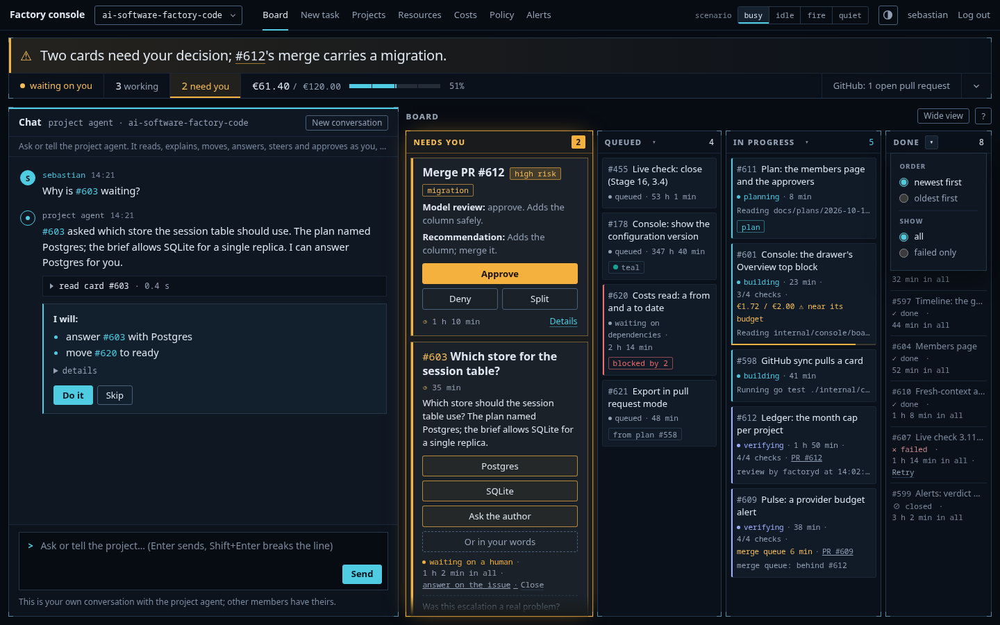
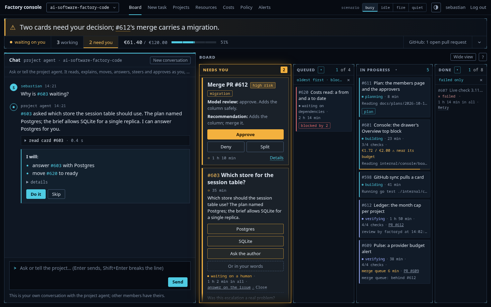
open the variant with two columns on · shots: unused light fire, by spend and exceptional only phone
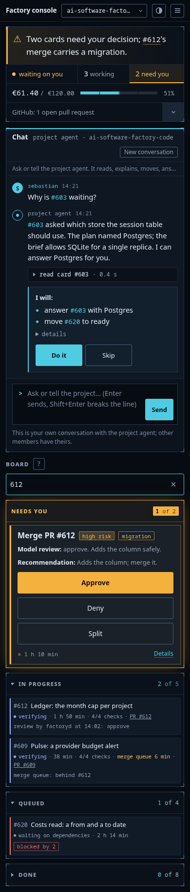
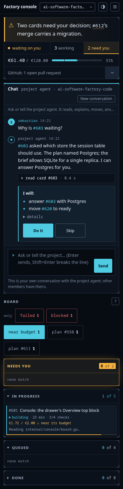
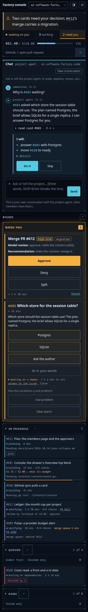
Two independent critics read the screenshots, not the code or this page. Gemini 2.5 Pro judged each variant alone from five or six shots (the prompt), then compared the three from the busy dark shots, unused and in use (the prompt). GLM 5V made the same comparison as a second critic. The answers are in critique-find.json, critique-chips.json, critique-menus.json, critique-compare-gemini.json and critique-compare-glm.json. Each call cost about $0.03.
The two critics disagree on the pick. Gemini ranks A, C, B and picks A: "the only variant that addresses the primary user need of finding a specific card across the entire board". GLM ranks C, A, B and picks C: the menus "preserve the board's quiet, monitor-like aesthetic and reveal sorting and filtering complexity only on demand", while A's box "invites interaction on every glance". Both put B last. GLM's fix for C is a find box that a key summons and that leaves no mark on the board, which the IA's rule against hidden controls speaks against. Gemini's fix for A is to add C's order menus beside it.
The scores. In the comparison both critics scored clutter as an amount, so a low number is quiet. In the single critiques 10 means the control adds nothing visible when unused.
| Variant | Gemini alone, clutter (10 quiet) | reach | clarity | Gemini compared, clutter (1 quiet) | reach | clarity | GLM compared, clutter (1 quiet) | reach | clarity |
|---|---|---|---|---|---|---|---|---|---|
| A, find | 9 | 5 | 10 | 2 | 9 | 8 | 7 | 9 | 9 |
| B, chips | 10 | 7 | 10 | 8 | 3 | 7 | 9 | 7 | 7 |
| C, menus | 10 | 4 | 10 | 3 | 5 | 9 | 2 | 5 | 7 |
Every single critique ends "keep and fix". The craft notes that belong to this round: the "0 of 1" count on an emptied Needs you column reads oddly (A). The radios in two groups could read as one choice for the whole menu (C). The chips lack a way to type a word (B, by design). The notes that do not belong to it: the critic read the light theme's "high risk" chip and the Needs you header at 1.5:1 to 2.9:1, where the tokens measure 5.0:1 and 6.0:1 (DESIGN.md), and read the chips as "pills and searchable text fields toggled by a question mark". The critic is right on craft and wrong on structure, as the first round found.
Every text pair this round adds, from the tokens, dark and light. The lowest is the find's placeholder in light at 4.9:1.
| Text pair | dark | light |
|---|---|---|
| the find's placeholder, faint on the page | 5.7 | 4.9 |
| the find's text on the page | 15.8 | 14.3 |
| a filtered count, cyan on the column | 9.9 | 5.6 |
| "of 8" at 75 percent on the column | 8.8 | 7.1 |
| "of 2" at 75 percent on the amber pill | 5.7 | 5.0 |
| "none match", faint on the column | 5.5 | 5.2 |
| a chip, muted on the page | 7.5 | 6.6 |
| a failed or blocked chip, red on the page | 6.7 | 5.0 |
| a stale, provider or near chip, amber on the page | 11.6 | 5.6 |
| a pressed chip, ink on cyan | 9.8 | 6.2 |
| the menu's ▾, faint on the column | 5.5 | 5.2 |
| the column's state line, cyan on the column | 9.9 | 5.6 |
| a menu option, muted on the raised panel | 6.9 | 7.3 |
| a menu legend, faint on the raised panel | 5.2 | 5.5 |
node check.js reads every variant: the controls are there, a find narrows the columns and the URL carries it, Escape and × clear it, a chip presses and clears, a menu opens, filters, orders and resets, the accent filter and the ticker are gone, no horizontal scroll at 390, every control of the round at 44 px on the phone. Its last run: ok: the controls are there, the mechanics work.
Sebastian picked A and C together, the find box for all cards and the menu per column (C13 in design-decisions.md, roadmap 236). The chips are out. The same day he asked for two things on the live board, taken into the round ahead of the pick: the columns must never scroll sideways and scroll down only when the cards overflow, and every column sorts by arrival with the newest card on top. The build lands on the console in one pull request per item; the plan with the ledger is docs/plans/2026-10-14-board-filters.md. Every shot below comes from the console lab, busy dark at 1440 unless named.
The console before the round: every column scrolls itself, with a scrollbar on the right and one at the foot from the corner marks a pixel outside it.
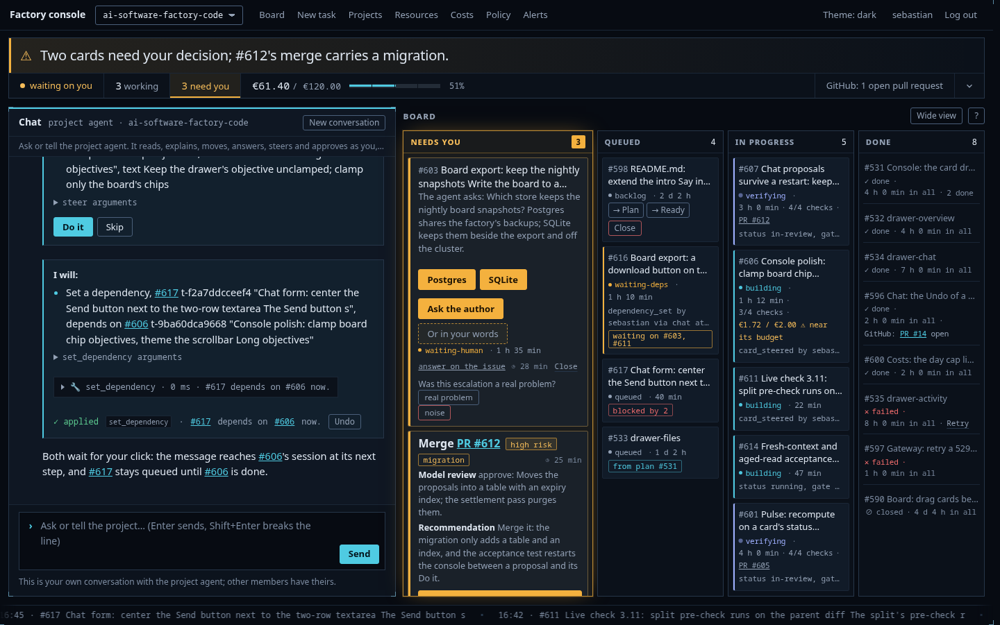
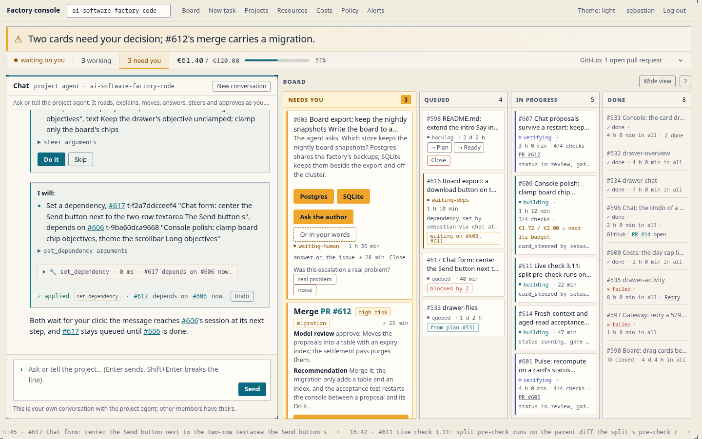
Every scenario and theme: busy dark busy light idle dark idle light fire dark fire light quiet dark quiet light phone
The column holds its head and a body. The body alone scrolls, down only and only when the cards overflow, and clips sideways. The head and the corner marks stay in place. The structural check now fails on a column that scrolls itself or a body that scrolls sideways.
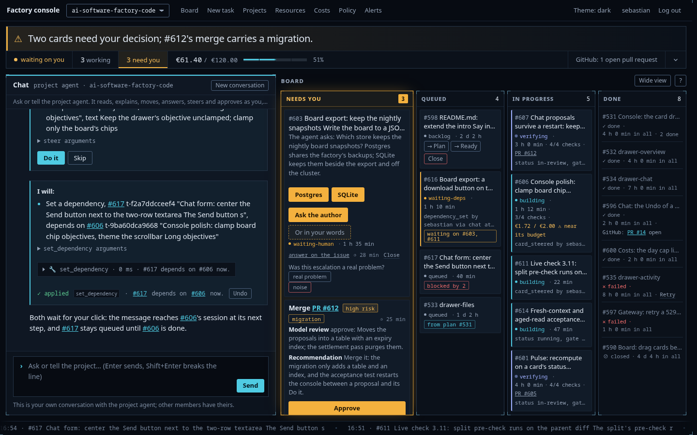
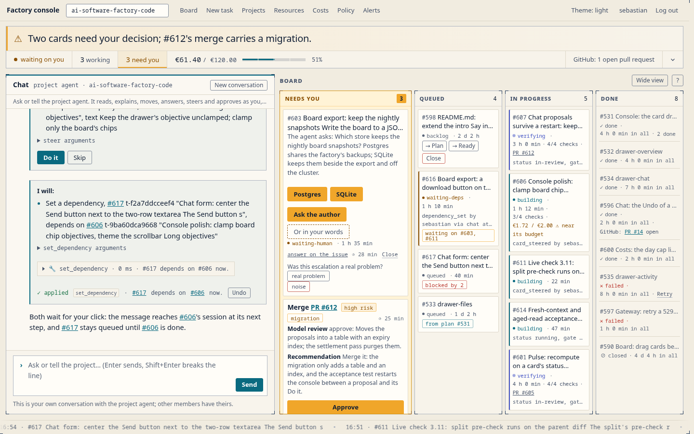
Every scenario and theme: busy dark busy light idle dark idle light fire dark fire light quiet dark quiet light phone tall, every card
Queued by filing, In progress by admission, Done by finishing, each newest first, whatever order the store gave them. Needs you stays oldest waiting first. In the busy moment the Done column now starts with the card that finished last.
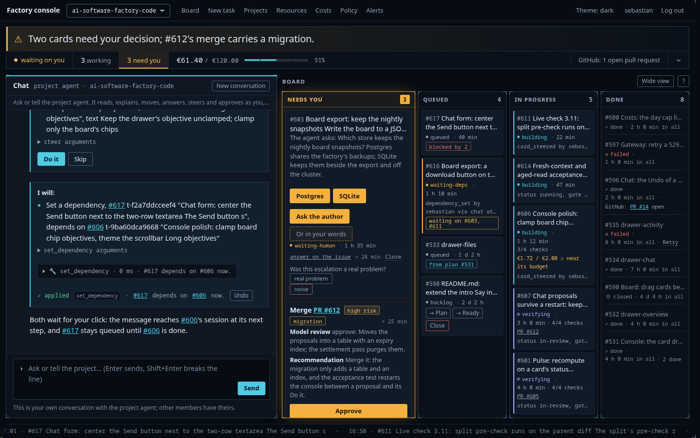
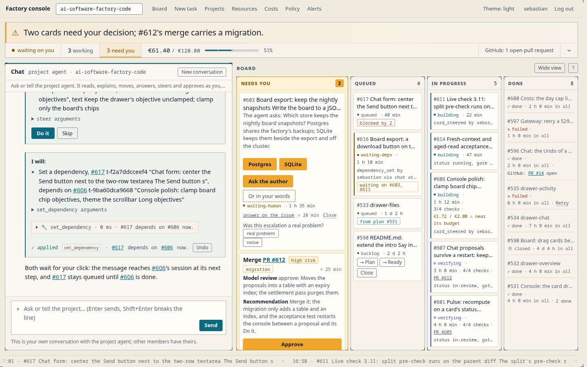
Every scenario and theme: busy dark busy light idle dark idle light fire dark fire light quiet dark quiet light phone
One box right of "Board". A word matches what the face says, a key:value term a fact behind it. Enter submits it as ?q=, × clears it, f focuses it. Each column keeps its whole count and reads "n of m" in cyan when narrowed, an emptied column says "none match", the Needs you column keeps its amber. The strip and the status panel stay the project's.
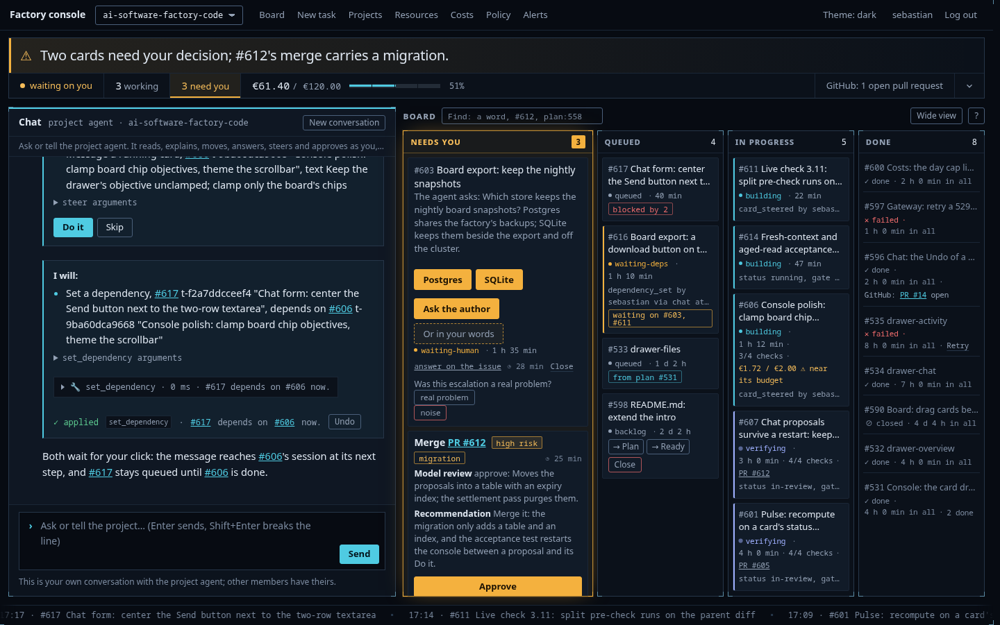
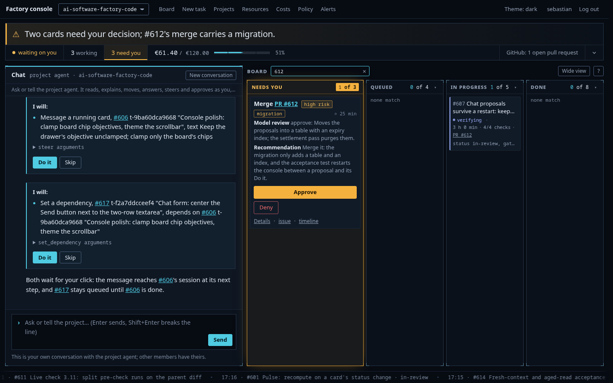
Every scenario and theme: busy dark busy light idle dark idle light fire dark fire light quiet dark quiet light phone phone, the find on
A ▾ at the head's right of Queued, In progress and Done opens the column's orders and shows as two radio groups. A column in another order or with a show says so under its head with × back. The choices live in the URL with the find, the project and the view.
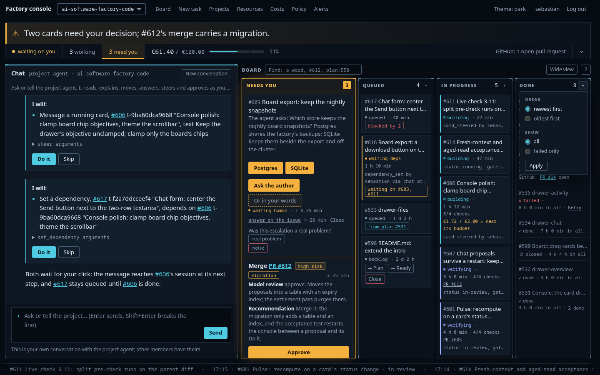
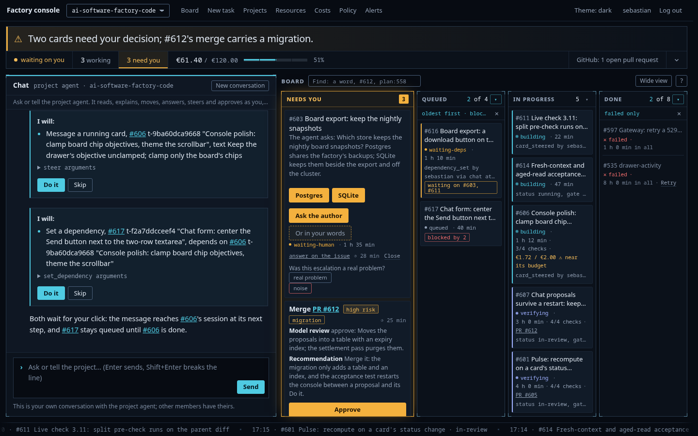
Every scenario and theme: busy dark busy light idle dark idle light fire dark fire light quiet dark quiet light light, two columns on phone phone, two columns on
Every item landed, and C12's ticker with them: the page ends with the board. The find box, the menus' ▾, the newest card on top of every column, the columns that scroll only when they must. Shot from the final main in every scenario and theme, on the desk, the phone and the wide view.
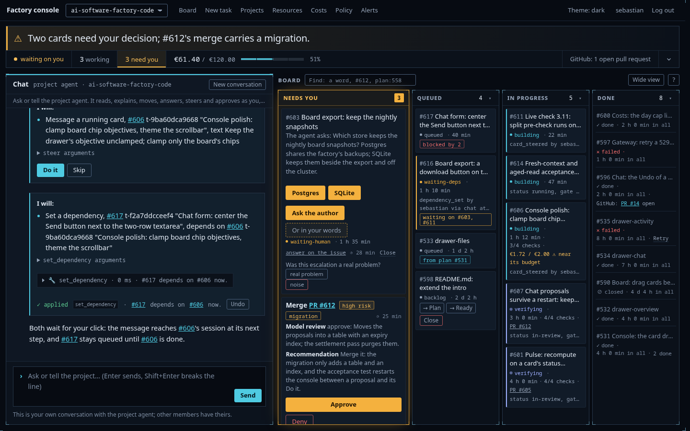
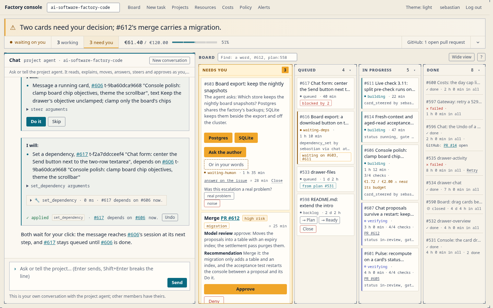
Every scenario and theme: busy dark busy light idle dark idle light fire dark fire light quiet dark quiet light busy dark at 1920
The phone: busy dark busy light idle dark idle light fire dark fire light quiet dark quiet light · the wide view: dark light
The structural check (scripts/console-lab/check.js) after every item: ok: every control present, the mechanics work, with its new lines on the columns' scrolling, the find and the menus. go test ./internal/console/ and gosec green on every landed commit. The console's tokens are the prototype's, so the contrast table above holds for the console's find, counts, state lines and menus; the one pair the console adds, the narrowed number on the amber pill, is the pill's ink at 9.9:1 dark and 8.2:1 light.